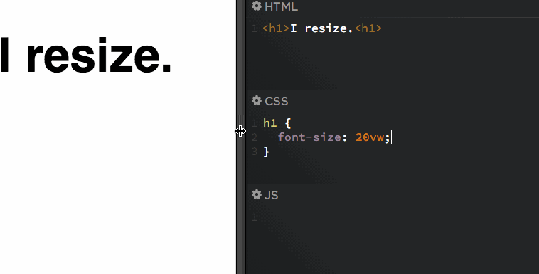
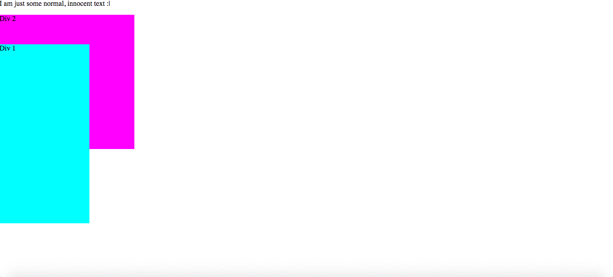

Los atributos cambian el comportamiento de las etiquetas.
Apuntes de la Clase
La estructura básica es <html>, <head>,
<body>.
Etiquetas comunes son <h1> a <h6>, <p>,
<div>, <span>, <a>,
<img>.
Usar <img> con el atributo src para imágenes.
Crear enlaces con <a> y usar href.
Comentarios en HTML: <!-- comentario -->.
Texto en HTML
Ideas Principales
Organiza el texto en párrafos, encabezados y listas.
Usar <strong> y <em> para resaltar texto.
Mejora la comprensión con texto resaltado.
Listas bien estructuradas ayudan a navegar.
Elige listas ordenadas o desordenadas según el caso.
Apuntes de la Clase
Usar <p> para párrafos y <h1> a <h6> para
encabezados.
<strong> y <em> resaltan texto.
Crear listas ordenadas (<ol>) y desordenadas (<ul>).
Crear enlaces a otras partes del documento con anclas.
Anclas con <a href="#ancla">Texto del enlace</a>.
Imágenes en HTML
Ideas Principales
Optimiza imágenes para tiempos de carga más rápidos.
Usar formatos adecuados (jpg, png, gif).
Imágenes relevantes mejoran el contenido.
Usar alt para accesibilidad.
Elegir formato adecuado (JPEG o PNG) según el uso.
Apuntes de la Clase
Insertar imágenes con <img>.
Forma básica: <img src="ruta-de-la-imagen" alt="Descripción">.
El atributo src indica la ubicación de la imagen.
El atributo alt es para accesibilidad y se muestra si no carga la imagen.
Usar width y height para ajustar el tamaño.
Enlaces en HTML
Ideas Principales
Crear enlaces internos con anclas.
Los enlaces deben ser descriptivos.
target="_blank" abre el enlace en nueva pestaña.
Los enlaces deben ser fáciles de identificar.
Apuntes de la Clase
Los enlaces permiten navegar entre páginas o secciones.
Crear hipervínculos con <a>.
Forma básica de un enlace: <a href="url">Texto</a>.
Para enlazar a una sección: <a href="#ancla">.
El atributo target define cómo abrirá el enlace.
El texto del enlace debe ser claro para el usuario.
CSS
Ideas Principales
CSS da estilo a las páginas HTML.
Usa selectores para aplicar estilos a elementos.
Las hojas de estilo pueden ser externas o internas.
Con CSS puedes cambiar colores, fuentes y layout.
Apuntes de la Clase
Forma básica de CSS: selector { propiedad: valor; }.
Usar color, background-color, font-size.
Usar clases (.) y ID (#) para seleccionar elementos.
Las hojas de estilo pueden estar en la misma página o ser archivos separados.
Incluir CSS en HTML: <link rel="stylesheet" href="estilos.css">.

Proceso de Diseño
Ideas Principales
El proceso de diseño web incluye investigar, planear y desarrollar.
Hacer wireframes es importante para ver cómo se verá el diseño.
El diseño debe centrarse en el usuario y ser fácil de usar.
Prototipar ayuda a recibir comentarios antes de terminar el desarrollo.
Es clave hacer pruebas y ajustes para que el producto funcione bien.
Documentar lo que se hace es útil para futuras mejoras.
Apuntes de la Clase
Primero, se identifican las necesidades y los objetivos del sitio.
Investigar ayuda a conocer al público que usará el sitio.
Fase de Análisis del Proyecto:
¿Para qué se necesita el sitio web?
¿Qué buscarán los usuarios aquí?
¿Qué servicios interactivos se agregarán? (como formularios de contacto)
¿Qué imagen queremos dar a los usuarios?
¿Qué impacto tendrá el sitio en ellos?
Información del Usuario:
Es importante saber su nivel socioeconómico, sexo, edad y ocupación.
También hay que considerar sus hábitos de consumo y motivaciones.
Benchmarking:
Analizar 5 páginas similares para ver sus objetivos y qué tan efectivas son.
Revisar si son fáciles de navegar y si el contenido está bien organizado.
Modelado del Usuario:
Crear "personas" y escenarios para entender mejor a los usuarios.
Diseño Conceptual:
Hacer bocetos o sketches para planificar visualmente el diseño.
Diseño Visual:
Crear maquetas que muestren cómo se verá el sitio final.
Position
Ideas Principales
static es el valor por defecto.
z-index controla la superposición de elementos.
Apuntes de la Clase
position: static; no afecta la ubicación del elemento.
position: relative; permite mover el elemento usando top, right, bottom, left sin alterar el flujo
del documento.
position: absolute; saca al elemento del flujo normal, posicionado respecto a su contenedor
posicionado.
position: fixed; fija el elemento en un lugar de la ventana.

Display
Ideas Principales
Block hace que un elemento ocupe todo el ancho disponible.
None puede utilizarse con un script para ocultar o mostrar al interactuar con algun elemento
Apuntes de la Clase
Block hace que el elemento empiece en una nueva línea.
Inline coloca los elementos uno al lado del otro sin forzar nuevas líneas.
Inline-block combina características de block e inline, permitiendo que los elementos se alineen en
una línea sin ocupar todo el ancho.
Display none oculta un elemento pero sigue existiendo.
Animación
Ideas Principales
Las animaciones se definen con keyframes.
Las propiedades que se pueden animar incluyen color, posición, y tamaño.
Las transiciones permiten cambios suaves en las propiedades de los elementos.
Apuntes de la Clase
Usar @keyframes para definir las animaciones en CSS.
Definir el estado inicial y final de la animación dentro de los keyframes.
Las transiciones pueden activarse cuando un elemento cambia de estado, por ejemplo, al pasar el
ratón por encima.
Controlar la duración, retraso y el tipo de interpolación con propiedades como
transition y animation.
animation-timing-function: Controla la velocidad de la animación a lo largo de su
duración. Puede tomar valores como:
linear: velocidad constante.
ease: comienza despacio, se acelera y termina despacio.
ease-in: comienza despacio y acelera.
ease-out: comienza rápido y desacelera.
ease-in-out: comienza y termina despacio, acelerando en el medio.
cubic-bezier(): permite personalizar la curva de aceleración.
Nuevas Propiedades de CSS3
Ideas Principales
Asegúrar de que el redondeo no afecte la legibilidad de los textos.
Se recomienda optimizar las fuentes y usar solo las necesarias.
Las sombras y las transiciones mejoran la apariencia visual.
Media queries permiten adaptar el diseño a diferentes dispositivos.
Apuntes de la Clase
box-shadow: añade sombras a elementos de bloque, permitiendo especificar desplazamiento, difuminado,
expansión y color.
text-shadow: aplica sombras a texto, lo que permite crear efectos de profundidad.
border-radius: redondea las esquinas de los elementos, permitiendo crear elementos más suaves.
@font-face: permite a los desarrolladores usar fuentes personalizadas en sus sitios web, mejorando
la tipografía.
Referencias Avanzadas
Ideas Principales
Se pueden combinar varias referencias
No todos los selectores avanzados son compatibles con todas las versiones de navegadores.
Algunos selectores avanzados, si se usan en grandes cantidades, pueden impactar negativamente el
rendimiento.
A medida que los selectores se vuelven más avanzados, pueden volverse difíciles de entender.
Apuntes de la Clase
[atributo~="valor"]: Selecciona los elementos cuyo atributo contiene la palabra específica.
[atributo^="valor"]: Selecciona los elementos cuyo atributo empieza con un valor.
[atributo$="valor"]: Selecciona los elementos cuyo atributo termina en el valor especificado.
*[atributo="valor"]**: Selecciona los elementos cuyo atributo contiene el valor en cualquier parte.
:nth-child(n): Selecciona el n-ésimo hijo de su padre.
:nth-of-type(n): Selecciona el n-ésimo hijo del mismo tipo (etiqueta).
:first-child / :last-child: Selecciona el primer o último hijo de un contenedor.
Selector hijo (>): Selecciona solo los elementos hijos directos.
Carrera Universitaria
Position
Ideas Principales
static es el valor por defecto.
z-index controla la superposición de elementos.
Apuntes de la Clase
position: static; no afecta la ubicación del elemento.
position: relative; permite mover el elemento usando top, right, bottom, left sin alterar el
flujo
del documento.
position: absolute; saca al elemento del flujo normal, posicionado respecto a su contenedor
posicionado.
position: fixed; fija el elemento en un lugar de la ventana.
Formularios
Ideas Principales
Los formularios permiten la interacción con el usuario para ingresar datos.
Los elementos de formulario más comunes son inputs, selects, y botones.
Incluir mensajes de error claros y visibles si el formulario no pasa la validación.
Permitir la navegación por el formulario usando la tecla Tab para mejorar la accesibilidad.
Los botones de tipo submit envían el formulario. Asegúrate de que estén claramente visibles.
Los botones de tipo reset restablecen todos los campos del formulario a su valor inicial, pero
no es común en muchos formularios por la posibilidad de causar pérdida de datos sin querer.
Apuntes de la Clase
El elemento <form> es el contenedor principal para los campos de un
formulario, y se utiliza para enviar datos a un servidor.
El elemento <input> es un campo dentro de un formulario que permite la
entrada de datos por parte del usuario. Su tipo puede variar según lo que se necesita recolectar
(texto, fecha, número, etc.).
El atributo type define el tipo de entrada que debe aceptar el campo
<input>, como text, email, password,
entre otros.
El elemento <fieldset> se utiliza para agrupar elementos dentro de un
formulario, proporcionando un contorno visual para los grupos de campos relacionados.
El elemento <legend> se usa junto con <fieldset> para
proporcionar una descripción o título para el grupo de campos, haciendo el formulario más
accesible.
El elemento <label> define una etiqueta asociada a un campo de formulario, lo
que mejora la accesibilidad y facilita que el usuario entienda qué se espera en cada campo.
El elemento <input> type="submit" es un botón que envía el formulario al
servidor para procesar los datos ingresados.
El elemento <input> type="email" permite que el usuario ingrese una dirección
de correo electrónico. Los navegadores pueden validar el formato del correo automáticamente.
El elemento <input> type="password" permite que el usuario ingrese una
contraseña, ocultando los caracteres por razones de seguridad.
El elemento <input> type="date" permite seleccionar una fecha mediante un
calendario emergente o ingresando una fecha manualmente en el formato apropiado.
Los botones de entrada son botones que permiten a los usuarios realizar una acción, como enviar
datos (submit) o restablecer el formulario (reset).
El atributo onclick permite definir una acción cuando se hace clic sobre un
elemento, como un botón o enlace. Usualmente se utiliza para ejecutar funciones de JavaScript.
El elemento <input> type="file" permite que el usuario seleccione un archivo
para cargar desde su dispositivo.
El elemento <input> type="reset" es un botón que restablece todos los campos
del formulario a sus valores iniciales (por defecto).
El elemento <input> type="range" permite al usuario seleccionar un valor
dentro de un rango determinado, generalmente presentado como una barra deslizante.
El elemento <input> type="search" permite la entrada de texto para realizar
búsquedas, y los navegadores pueden ofrecer características como autocompletado.
El elemento <input> type="page" puede referirse a una entrada de número de
página o al campo de entrada de un número de página en un formulario.
El elemento <input> type="url" permite la entrada de una dirección de URL, y
puede validar que la entrada sea una URL correcta.
El elemento <input> type="color" permite que el usuario seleccione un color
de una paleta proporcionada por el navegador.
El atributo pattern se usa en campos de texto (<input>) para
especificar una expresión regular, validando que la entrada del usuario coincida con un patrón
determinado (por ejemplo, un formato de teléfono o código postal).
Los botones de radio y checkbox:
<input> type="radio" permite que el usuario seleccione solo una
opción entre varias predefinidas, es decir, un conjunto de opciones mutuamente
excluyentes.
<input> type="checkbox" permite seleccionar múltiples opciones de un
conjunto, ya que las casillas de verificación no son mutuamente excluyentes.
Tablas
Ideas Principales
Las tablas se utilizan para organizar datos en filas y columnas.
El uso de <th> y <td> es crucial para la estructura de las tablas.
Apuntes de la Clase
<table> define la tabla, <tr> define una fila, <th> define una celda de
encabezado, y <td> define una celda de datos.
Se pueden aplicar estilos a tablas utilizando CSS para mejorar su legibilidad.
Las tablas son útiles cuando se necesita presentar datos organizados en una cuadrícula.
Especificidad (Niveles)
Ideas Principales
La especificidad determina qué reglas CSS se aplican cuando varias reglas coinciden con el mismo
elemento.
El valor de especificidad se calcula sumando valores en diferentes categorías.
Apuntes de la Clase
El valor de especificidad se calcula basándose en la cantidad de IDs, clases y elementos en un
selector.
Un selector con un ID tiene mayor especificidad que uno con una clase.
Los valores de especificidad se suman: <ID> > .<clase> > <elemento>.
La excepción "!important" permite que una regla CSS se aplique incluso si tiene menor
especificidad, sobrescribiendo otras reglas.
:before y :after
Ideas Principales
:before y :after permiten agregar contenido antes o después de un elemento sin modificar el
HTML.
Son muy útiles para crear decoraciones o efectos visuales.
Solo el html es seleccionable, el css no
Apuntes de la Clase
:before inserta contenido antes de un elemento, mientras que :after lo inserta después.
Son pseudoelementos que no afectan el flujo del documento, solo la apariencia visual.
Ambos se usan comúnmente con la propiedad <content>.
La propiedad "content: url("ruta_de_imagen") se utiliza para insertar una imagen en lugar de
texto en los pseudoelementos ":before" y ":after".
Se puede usar para agregar imágenes como iconos u otros elementos visuales sin modificar el
HTML.
Header y Footer
Ideas Principales
El header y el footer son elementos importantes para organizar la estructura de la página.
Ambos pueden contener navegación, información de contacto, entre otros.
Apuntes de la Clase
Logotipo: Generalmente colocado a la izquierda o al centro, es crucial para la identidad de la
página o la marca.
Formulario de inscripción: Un formulario breve para que los usuarios se registren, como una
suscripción a un boletín de noticias.
Selector de idioma: Un menú desplegable o enlaces para cambiar el idioma del sitio.
Iconos de redes sociales: Enlaces a las redes sociales de la empresa o marca, usualmente en
forma de iconos.
Menú de navegación: Acceso rápido a las secciones principales del sitio.
Propiedad Filter
Ideas Principales
La propiedad <filter> permite aplicar efectos gráficos como desenfoques y sombras a los
elementos.
Es útil para crear efectos visuales sin necesidad de imágenes adicionales.
Blur no tiene unidades negativas
Apuntes de la Clase
Se pueden aplicar efectos como <blur>, <brightness>, <contrast>, entre otros.
brightness: Controla la luminosidad de un elemento. Aumentar el valor hace que el elemento se vea más brillante, mientras que disminuirlo lo oscurece.
contrast: Ajusta el contraste de un elemento. Un valor mayor aumenta la diferencia entre las áreas claras y oscuras, mientras que un valor menor reduce esa diferencia.
dropshadow: Aplica una sombra a un elemento, creando un efecto de profundidad al hacer que el elemento parezca elevado del fondo.
boxshadow: Similar a dropshadow, pero se aplica a un contenedor o caja. Se puede personalizar el color, la extensión y la dirección de la sombra.
grayscale: Convierte un elemento en escala de grises. El valor varía de 0 (colores completos) a 100% (escala de grises total).
hue-rotate: Rota los colores de un elemento en el círculo cromático. Este valor cambia el matiz de los colores, permitiendo transformaciones visuales interesantes.